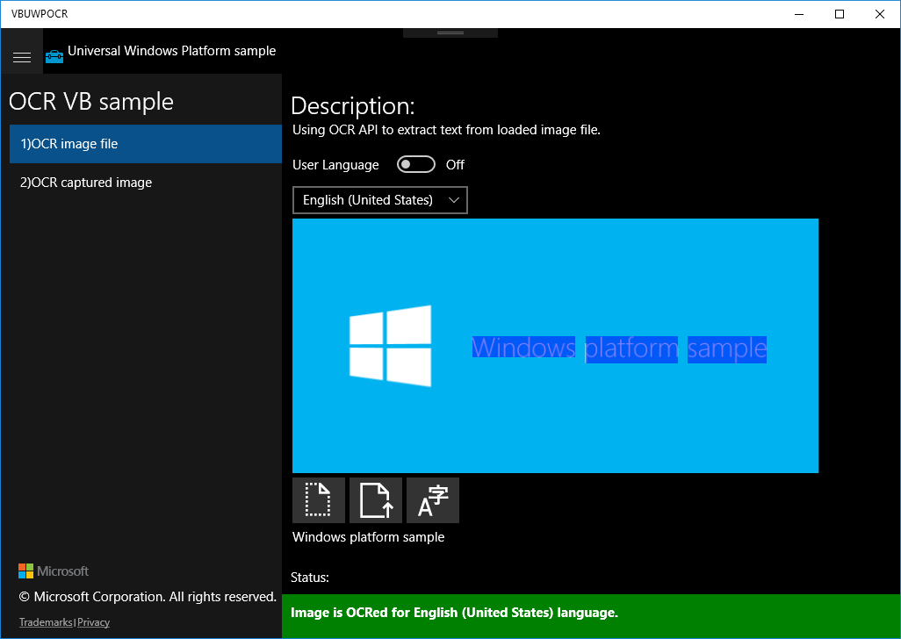

How to use OCR in VB in Universal Windows Platform apps
How to use OCR in VB in Universal Windows Platform apps
This sample demonstrates how to use OCR in VB in Universal Windows Platform apps.
Sample prerequisites
• Visual Studio 2017 or above [Visual Studio Home Page]
Building the sample
• Open the sample solution “VBUWPOCR.sln” using Visual Studio
• Right click the project “VBUWPOCR” and select Restore Packages
• Press F6 Key or select Build -> Build Solution from the menu to build the sample.
Running the sample
• Open the sample solution using Visual Studio, select Local Machine in the tool bar then press F5 Key or select Debug -> Start Debugging from the menu.

• Click on the right button below the image.

• Click on the middle button below the image to upload user image.


• Click on the right button to see the extracted result.
• Click on the second menu item on the left, you can capture image by camera to get the result.

Using the code
OcrFileImage:
Private Async Sub ExtractButton_Tapped(sender As Object, e As TappedRoutedEventArgs)
ClearResults()
' Check if OcrEngine supports image resoulution.
If (bitmap.PixelWidth > OcrEngine.MaxImageDimension Or bitmap.PixelHeight > OcrEngine.MaxImageDimension) Then
rootPage.NotifyUser(
String.Format("Bitmap dimensions ({0}x{1}) are too big for OCR.", bitmap.PixelWidth, bitmap.PixelHeight) +
"Max image dimension is " + OcrEngine.MaxImageDimension + ".",
NotifyType.ErrorMessage)
Return
End If
Dim myOcrEngine As OcrEngine = Nothing
If (UserLanguageToggle.IsOn) Then
' Try to create OcrEngine for first supported language from UserProfile.GlobalizationPreferences.Languages list.
' If none of the languages are available on device, method returns null.
myOcrEngine = OcrEngine.TryCreateFromUserProfileLanguages()
Else
' Try to create OcrEngine for specified language.
' If language Is Not supported on device, method returns null.
myOcrEngine = OcrEngine.TryCreateFromLanguage(LanguageList.SelectedValue)
End If
If (myOcrEngine IsNot Nothing) Then
' Recognize text from image.
Dim myOcrResult = Await myOcrEngine.RecognizeAsync(bitmap)
' Display recognized text.
ExtractedTextBox.Text = myOcrResult.Text
If (myOcrResult.TextAngle IsNot Nothing) Then
' If text Is detected under some angle in this sample scenario we want to
' overlay word boxes over original image, so we rotate overlay boxes.
Dim transform = New RotateTransform()
transform.Angle = myOcrResult.TextAngle
transform.CenterX = PreviewImage.ActualWidth / 2
transform.CenterY = PreviewImage.ActualHeight / 2
TextOverlay.RenderTransform = transform
End If
' Create overlay boxes over recognized words.
For Each line In myOcrResult.Lines
Dim lineRect = Rect.Empty
For Each word In line.Words
lineRect.Union(word.BoundingRect)
Next
' Determine if line Is horizontal Or vertical.
' Vertical lines are supported only in Chinese Traditional And Japanese languages.
Dim isVerticalLine As Boolean = lineRect.Height > lineRect.Width
For Each word In line.Words
Dim wordBoxOverlay As New WordOverlay(word)
' Keep references to word boxes.
wordBoxes.Add(wordBoxOverlay)
' Define overlay style.
Dim overlay = New Border()
If (isVerticalLine) Then
overlay.Style = Resources.Item("HighlightedWordBoxVerticalLine")
Else
overlay.Style = Resources.Item("HighlightedWordBoxHorizontalLine")
End If
' Bind word boxes to UI.
overlay.SetBinding(Border.MarginProperty, wordBoxOverlay.CreateWordPositionBinding())
overlay.SetBinding(Border.WidthProperty, wordBoxOverlay.CreateWordWidthBinding())
overlay.SetBinding(Border.HeightProperty, wordBoxOverlay.CreateWordHeightBinding())
' Put the filled textblock in the results grid.
TextOverlay.Children.Add(overlay)
Next
Next
' Rescale word boxes to match current UI size.
UpdateWordBoxTransform()
rootPage.NotifyUser(
"Image is OCRed for " + myOcrEngine.RecognizerLanguage.DisplayName + " language.",
NotifyType.StatusMessage)
Else
rootPage.NotifyUser("Selected language is not available.", NotifyType.ErrorMessage)
End If
End Sub
Private Async Sub ExtractButton_Tapped(sender As Object, e As TappedRoutedEventArgs) ClearResults() ' Check if OcrEngine supports image resoulution. If (bitmap.PixelWidth > OcrEngine.MaxImageDimension Or bitmap.PixelHeight > OcrEngine.MaxImageDimension) Then rootPage.NotifyUser( String.Format("Bitmap dimensions ({0}x{1}) are too big for OCR.", bitmap.PixelWidth, bitmap.PixelHeight) + "Max image dimension is " + OcrEngine.MaxImageDimension + ".", NotifyType.ErrorMessage) Return End If Dim myOcrEngine As OcrEngine = Nothing If (UserLanguageToggle.IsOn) Then ' Try to create OcrEngine for first supported language from UserProfile.GlobalizationPreferences.Languages list. ' If none of the languages are available on device, method returns null. myOcrEngine = OcrEngine.TryCreateFromUserProfileLanguages() Else ' Try to create OcrEngine for specified language. ' If language Is Not supported on device, method returns null. myOcrEngine = OcrEngine.TryCreateFromLanguage(LanguageList.SelectedValue) End If If (myOcrEngine IsNot Nothing) Then ' Recognize text from image. Dim myOcrResult = Await myOcrEngine.RecognizeAsync(bitmap) ' Display recognized text. ExtractedTextBox.Text = myOcrResult.Text If (myOcrResult.TextAngle IsNot Nothing) Then ' If text Is detected under some angle in this sample scenario we want to ' overlay word boxes over original image, so we rotate overlay boxes. Dim transform = New RotateTransform() transform.Angle = myOcrResult.TextAngle transform.CenterX = PreviewImage.ActualWidth / 2 transform.CenterY = PreviewImage.ActualHeight / 2 TextOverlay.RenderTransform = transform End If ' Create overlay boxes over recognized words. For Each line In myOcrResult.Lines Dim lineRect = Rect.Empty For Each word In line.Words lineRect.Union(word.BoundingRect) Next ' Determine if line Is horizontal Or vertical. ' Vertical lines are supported only in Chinese Traditional And Japanese languages. Dim isVerticalLine As Boolean = lineRect.Height > lineRect.Width For Each word In line.Words Dim wordBoxOverlay As New WordOverlay(word) ' Keep references to word boxes. wordBoxes.Add(wordBoxOverlay) ' Define overlay style. Dim overlay = New Border() If (isVerticalLine) Then overlay.Style = Resources.Item("HighlightedWordBoxVerticalLine") Else overlay.Style = Resources.Item("HighlightedWordBoxHorizontalLine") End If ' Bind word boxes to UI. overlay.SetBinding(Border.MarginProperty, wordBoxOverlay.CreateWordPositionBinding()) overlay.SetBinding(Border.WidthProperty, wordBoxOverlay.CreateWordWidthBinding()) overlay.SetBinding(Border.HeightProperty, wordBoxOverlay.CreateWordHeightBinding()) ' Put the filled textblock in the results grid. TextOverlay.Children.Add(overlay) Next Next ' Rescale word boxes to match current UI size. UpdateWordBoxTransform() rootPage.NotifyUser( "Image is OCRed for " + myOcrEngine.RecognizerLanguage.DisplayName + " language.", NotifyType.StatusMessage) Else rootPage.NotifyUser("Selected language is not available.", NotifyType.ErrorMessage) End If End Sub
More information
Microsoft All-In-One Code Framework is a free, centralized code sample library driven by developers' real-world pains and needs. The goal is to provide customer-driven code samples for all Microsoft development technologies, and reduce developers' efforts in solving typical programming tasks. Our team listens to developers’ pains in the MSDN forums, social media and various DEV communities. We write code samples based on developers’ frequently asked programming tasks, and allow developers to download them with a short sample publishing cycle. Additionally, we offer a free code sample request service. It is a proactive way for our developer community to obtain code samples directly from Microsoft.